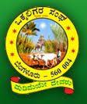

Rajya Vokkaligara Sangha (RVS) was founded in the year 1906 to promote social, cultural and educational aspirations of the agricultural community. Rajya Vokkaligara Sangha with a commanding presence in Bangalore, Ramanagara, Mandya, Mysore, Chikkamagalur, Hassan, Tumkur, Chikkaballapura, Kolar and Chitradurga districts and with a fairly well spread presence in other regions of Karnataka has been conducting number of regular activities for the development and well being of the community in particular and to all sections of the society in general. The sangha has also provided hostel facilities for poor background student and students are making use of this hostel facilities during their education career. The Rajya Vokkaligara Sangha comprise of 35 directors
Bangalore Institute of Technology (BIT) was started in the year 1979 with the objective of providing quality education in the field of Technology and thereby serving the society. It has reached enviable level of excellence in technical education. This was achieved due to the unconditional support of Rajya Vokkaligara Sangha, committed staff and students. The environment of BIT motivates the student to quench their thirst for knowledge. The college thrives to achieve the all-round development of the students.
BIT has always been at the forefront of modern technology and has the distinction of being the first College to introduce a full-fledged degree in Computer Science and Engineering in Karnataka. The institute has visualized the areas of future growth and incorporated various courses over the years. At present BIT has 10 undergraduate, 10 post graduate and 13 research centers. BIT has an annual intake of 1300 students.